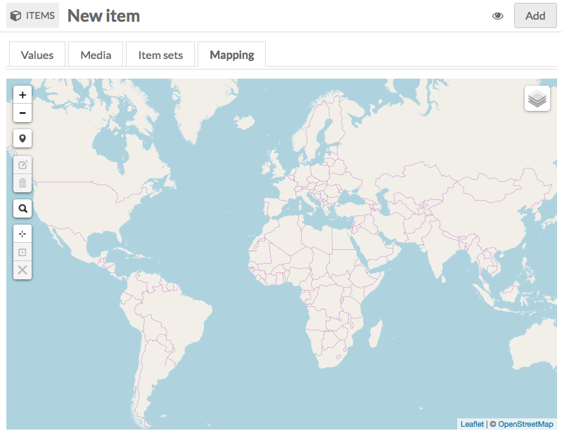

Mapping is a module for Omeka S which allows you to geolocate Omeka S items and add interactive maps to Site Pages
To install Mapping, follow the instructions for Installing Modules on the Modules documentation.
Mapping is compatible with CSV Import.
Adding Geolocation to an Item
To add a map to a new or existing item, click to edit the item. Navigate to the Mapping tab to add a map to the item. Selecting the tab will open the map interface.

Manipulating the Map
Small white buttons on the left side of the map control and modify the appearance of the map. Hover over the buttons with the mouse to view tool-tips.
- Zoom in: The small white square with a black plus sign. Each click zooms in one step.
- Zoom out: The small white square with black minus sign. Each click zooms out one step.
- Draw a Marker: The small white square with black bubble marker. When you click the button your pointer becomes a blue marker. Click again on the map to place the marker. An item can have multiple markers on its map. (See Figure 1 below.)
- Move Marker: The small white square with black box and pencil icon. This option is only available after a marker has been added. Click the button and a pink box appears around each marker. Click a marker to move it. Click again to place. Use the grey buttons to Save or Cancel. (See Figure 2 below.)
- Delete Marker: The small white button with a trashcan icon. This option is only available after a marker has been added. Click the icon to select a marker. Click the marker to be removed and it will disappear. Use the grey buttons to Save or Cancel these changes. (See Figure 3 below.)
- Search Address: The small white square with a black magnifying glass icon. Click to enter an address in the search bar. Hit enter to locate. (See Figure 4 below.)
- Set the current view as default view: The small white square with a target or crosshair symbol. The map will default to a zoomed out (global) view. Click to set the current view as the default view.
- Go to current default view: The small black square with a black box around a dot. The This option is only available after you have set a default view. Click to pan and zoom map to the selected view.
- Clear the default center and zoom level: The small white square with a black "X". This option is only available after you have set a default view. Click to clear pan and zoom preferences and return to the initial global view. In addition to these options, you can also navigate the map using your mouse or trackpad by scrolling to zoom and clicking and dragging to pan.
Figure 1: Drawing a Marker: Draw a marker - the lower marker in the image is the cursor placing a location.
Figure 2: Move a Marker The lower marker is in the process of being moved.
Figure 3: Delete a Marker Select an existing marker then click the trash can icon to delete the marker.
Figure 4 Search Address Click the magnifying glass icon to open a search address field.
Modifying the appearance of a Marker
The appearance of existing markers may be modified. Click the Marker to open a dialog window. * Enter descriptive text in the text field. * To add an image to the marker click Select Marker Image to select an image from the media uploaded to this item. * Note: the item must have image media attached in order to select an image.
Adding Items to a Page in a Site
To add a map to a new or existing page, click to edit the page. On the right, under Add New Block , click the Map tab to add a map to the item (1). Selecting the tab will open the map block to the page (2). This block includes customizable features for the map in collapsable panes. Click the triangle to expand or collapse these fields (3).
-
Default View: Small white buttons on the left of the map interface set the default view for the map. (See Figure 5 below.)
- Zoom in: The small white square with a black plus sign. Each click zooms in one step.
- Zoom out: The small white square with black minus sign. Each click zooms out one step.
- Set the current view as default view: The small white square with a target or crosshair symbol. The map will default to a global view. Click to set the current view as the default view.
- Go to current default view: The small black square with a black box around a dot. This option is only available after a default view has been set. Click to pan and zoom map to the selected view.
- Clear the default center and zoom level: The small white square with a black "X". Click to clear pan and zoom preferences and return to the initial global view.
-
WMS Overlays: Add, edit, and delete Web Map Service (WMS) overlays. (See Figure 6 below.)
- Label: Create a unique, descriptive label for the map overlay. This will be visible to visitors and should be used to differentiate between overlays.
- Base URL: Add a URL to the WMS map.
- Layers:
- Styles:
- Click Add Overlay to create the overlay. Click Clear Inputs to clear each of the fields. Multiple overlays can be added. Choose a default overlay by checking the box next to it. Edit or delete an overlay click on the red pencil edit button, or click the red trashcan icon to delete.
-
Attachments: Markers are added to the map using Items. (See Figure 7 below.)
- After Items have been mapped, click Add Attachment (1) to select them from a list on the right (2). Note: This list will only be populated by items that have been mapped.
- Clicking an item adds it to a list in the Attachments pane (3).
- Click and drag items in this list to reorder them.
- Delete items by clicking the red trashcan.
Figure 5: Default View
Small white buttons on the left of the map interface set the default view for the map
Figure 6: WMS Overlays
Add, edit, and delete Web Map Service (WMS) overlays.
Figure 7: Adding an Attachment
After Items have been mapped, click Add Attachment (1) to select them from a list on the right (2). Note: This list will only be populated by items that have been mapped. Clicking an item adds it to a list in the Attachments pane (3).
Troubleshooting
If you would like to remove a map from an item, you must delete all the map modifications. First, click to delete each marker (click the Delete a Marker button, select the marker, click to save) and then click to clear the default center and zoom level (click the Clear the default and zoom level button. The map will return to a global view). Click to save the item and confirm that the map no longer appears.